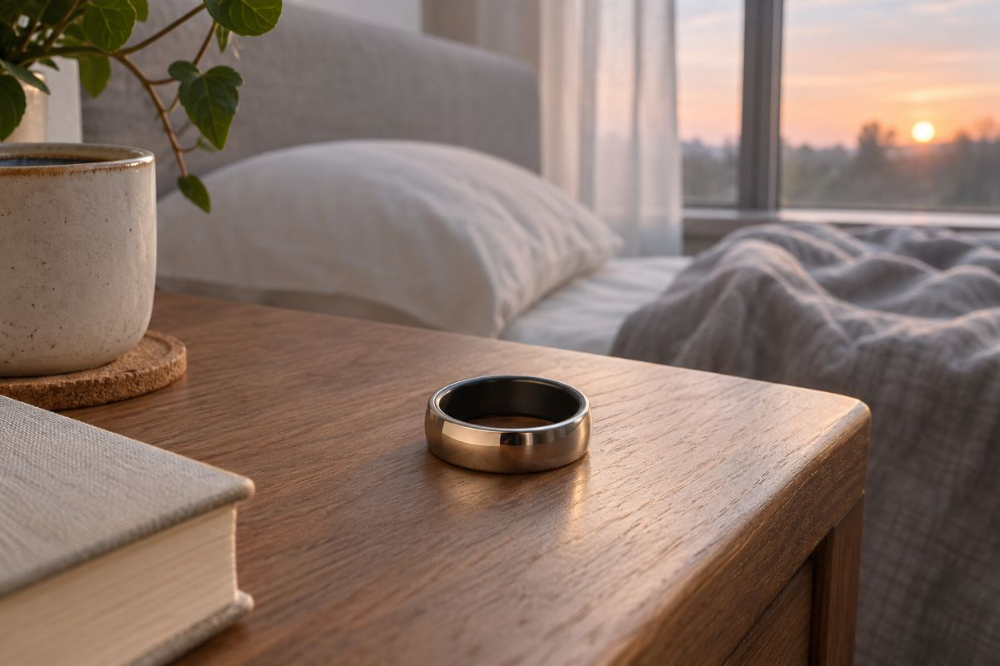

웨어러블 / EXPLAINED
갤럭시 링에도 수면무호흡 위험 평가, 손목에서 손가락으로
삼성전자는 11월 3일 갤럭시 링 지원을 발표했다. 미국 FDA 기록과 제품 공지를 함께 읽어 기능 범위와 배포 시점을 구분했다.

손가락에 착용하는 기기로 확장
삼성전자는 11월 3일 수면무호흡 위험 평가 기능을 갤럭시 링에서도 제공한다고 발표했다. 갤럭시 링은 손가락에 착용하는 웨어러블이다. 이번 변경은 수면 중 측정 장치를 손목형에서 링까지 넓힌다는 점에 있다. 삼성은 10일 이내에 유효한 이틀 밤의 기록이 필요하며, 업데이트된 기능에서 감지된 호흡 방해 수준에 관한 정보도 제공한다고 설명했다.
규제 결정과 제품 제공은 다른 날짜다
미국 FDA의 K261011 기록에는 2026년 7월 20일 결정이 기재돼 있다. 분류는 수면무호흡 위험을 평가하는 일반 판매용 기기이며, 결정 유형은 기존 기기와 실질적으로 동등하다는 510(k) 판단이다. 삼성의 발표에 따르면 한국 식품의약품안전처 허가는 10월이다. 11월 3일은 제품 기능 제공을 알린 날짜다. 규제 기록과 소프트웨어 배포 날짜는 각각 검토 완료와 이용 가능성이라는 별개의 질문에 답한다.
센서가 직접 보는 것과 소프트웨어가 추정하는 것
FDA 공개 자료에 따르면 이 기능은 빛을 이용해 맥박과 관련된 혈류 변화를 읽는 광용적맥파(PPG), 움직임 정보, PPG에서 얻은 산소포화도 관련 자료를 사용한다. 이 기록을 알고리즘이 분석해 수면 중 반복적인 호흡 방해와 관련된 패턴을 평가한다. 센서가 수집한 신호와 화면에 표시되는 위험 평가는 같은 종류의 데이터가 아니다. 후자는 측정 조건과 소프트웨어 처리에 의존하는 결과다.
사용자가 확인해야 할 적용 범위
공식 설명에서 이 기능은 18세 이상을 대상으로 중등도에서 중증 수면무호흡 징후의 위험을 평가하는 도구다. 이미 진단받은 사람을 대상으로 설계되지 않았고, 전문 의료진의 진단이나 치료를 대체하는 기능도 아니다. 이틀은 필요한 유효 기록의 기준이며, 한 번 착용하거나 기록 두 개가 생성됐다는 사실만으로 평가가 완성된다고 볼 수 없다. 기기와 휴대전화, 지역, 앱 버전의 호환성을 별도로 확인해야 한다.
링을 추가한 의미와 남은 확인 사항
편집부의 관점에서 링 지원의 의미는 같은 기능에 접근하는 착용 방식이 하나 더 생겼다는 데 있다. 손목 착용이 불편한 사람에게는 다른 선택지가 될 수 있다. 반면 링과 시계가 모든 개인에게 똑같이 맞거나 같은 신호 품질을 제공한다고 볼 근거는 없다. 삼성은 일부 이전 워치 모델에 후속 업데이트를 예고했으나 그 공지에서 정확한 날짜는 밝히지 않았다. 호환 목록과 업데이트 배포는 구매나 사용을 결정하기 전에 확인할 부분이다.
화면 속 숫자는 어떤 단위인가
갤럭시 링 기능이 제공하는 호흡 방해 정보는 이용자가 수면에 관해 설명할 자료가 될 수 있다. 다만 이 정보가 병원의 검사 결과와 같은 측정 절차를 거쳤다고 해석하면 범위를 벗어난다. FDA 요약에서 확인되는 것은 웨어러블 신호를 정해진 소프트웨어 방식으로 처리한다는 점이다. 이용 환경에서 신호가 부족하거나 유효한 밤을 채우지 못하면, 측정값이 없는 경우와 위험도가 낮다고 나온 경우를 같은 뜻으로 받아들이면 안 된다. 적용 범위를 확인할 때에는 결과 표시뿐 아니라 앱에 함께 제공되는 사용 설명도 읽는 편이 정확하다.